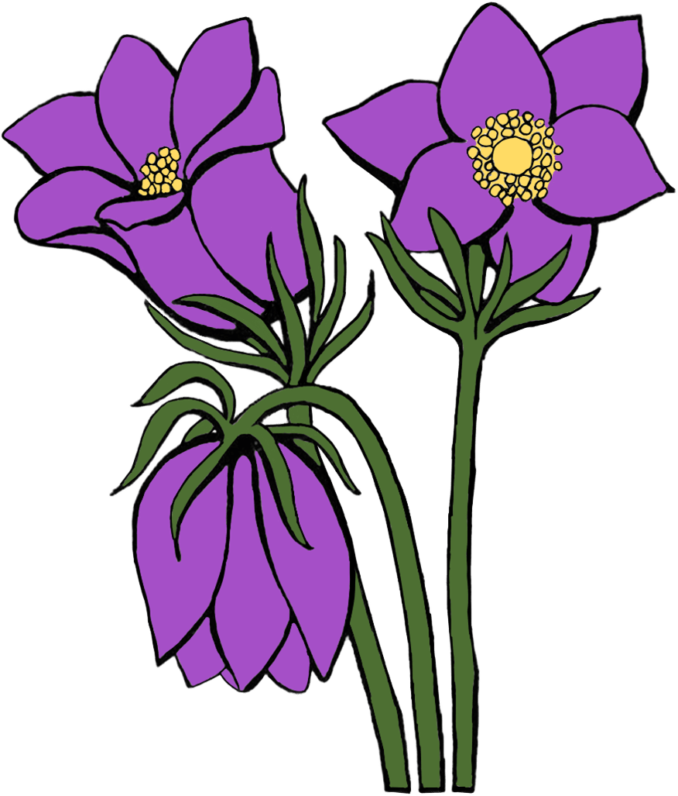

Сон-трава (Pulsatilla)
Короткий опис: пухнаста квітка з дзвоновими пелюстками.

Про квітку
Сон-трава розквітає ранньою весною, часто коли ще лежить сніг. Її пелюстки ніжно-фіолетові або блакитні, а квітки схожі на маленькі дзвіночки, що нахилилися до землі.
Рослина символізує спокій, таємничість і відродження природи. Поява сон-трави означає, що весна остаточно вступила у свої права, а холодна пора відступає.
У природі сон-трава приваблює комах і має лікувальні властивості у народній медицині. Вона популярна серед ботаніків і садівників завдяки своїй красі та витривалості, а також здатності прикрашати лісові галявини.